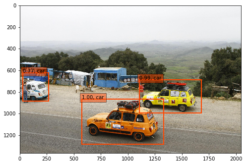 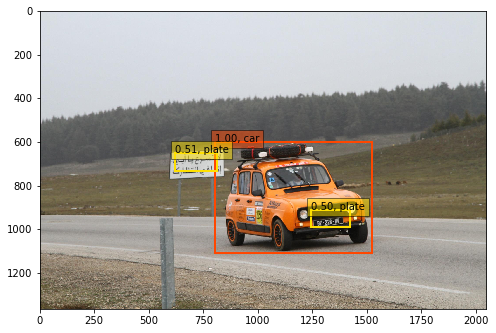 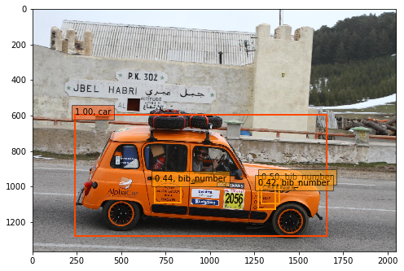 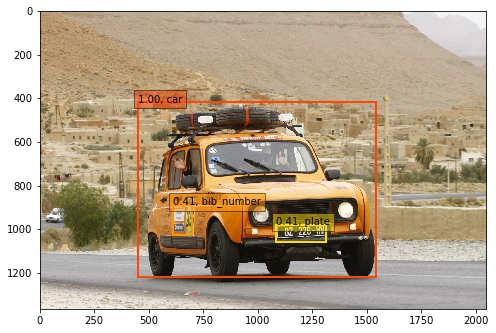 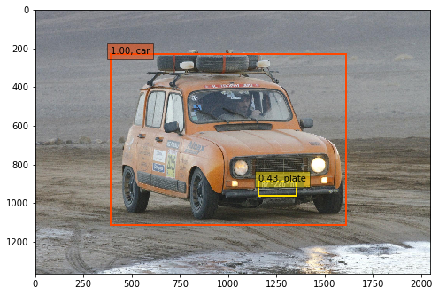
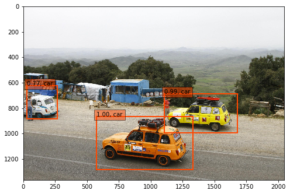 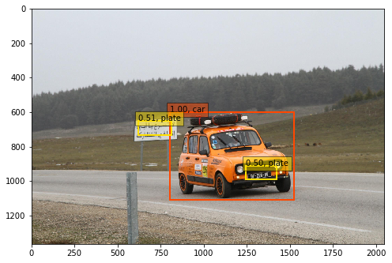 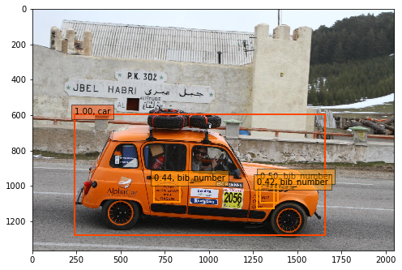 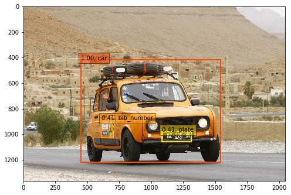 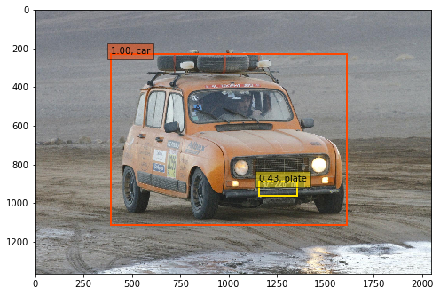
As the amount of data we generate every day grows heavily, companies, organizations and even individuals end up gathering more and more data into (very) large collections. One special case of data collections is image datasets. Images are indeed a particular kind of data that is poorly structured compared to time series or document corpuses for example. That lack of structure makes image collections very hard to explore as such. To overcome this, images should have structured annotations e.g. what is represented on it and its localization. In this thesis, we investigate how machine learning algorithms can help in doing these exact annotations. Especially, we want to take advantage of deep learning which has shown significant improvements in computer vision tasks in the recent years. Applications we will consider include large image collection visualization, image classification, object localization and clustering. We will address the particular case of working with images that may have noisy labels. Specifically, we will see how bagging algorithms help training models although part of the labels are wrong, and also how we can use these models to highlight images concerned by label errors. Thanks to this, we hope providing keys for enriching and cleaning image collections.
I would like to thank :
Mr. Augustin Lafanechère, Data Engineer at Equancy, for helping me finding this internship opportunity at Equancy.
Mr. Koby Karp, Data Science Lead at Equancy, for trusting me as an intern, and for his numerous tips on all machine learning related topics.
Mr. Denis Amselem, Senior Manager at Equancy, for his regular and detailed advice on how to handle general computer science projects.
Mr. Hervé Mignot, Partner at Equancy, for his interest in deep learning, and for the R&D initiative at Equancy which enabled me to work on a very interesting topic.
Mr. Martin Jaggi, Tenure-track assistant professor at EPFL, also supervisor of my thesis, for his regular and always quick feedbacks on my works. I would like to thank him for his support.
Mr. Hagop Boghazdeklian, Data Science Intern at Equancy, without whom I would maybe not have encountered XGBoost, and definitely would not have had as much pleasure as I had working at Equancy. I would like to thank him for the significant contributions he has had in this thesis.
Finally and without hesitation I would like to thank my father to whom this thesis is dedicated for his belief in me being a good investment ...
Mobile data traffic has grown 18-fold over the past 5 years, and reaches today a monthly value of 11 Exabytes (EB). Forecasts say it will keep rising, eventually reaching 49 EB by 2021. (Cisco 2017). Medias (videos / images) account today for more than 60 percent of this total traffic, and that part will keep growing in the next years. These figures underline the need for methods capable of handling large media collections like image or video collections. In this thesis, we focus on images.
First, Chapter 2 recalls how images are represented by computers, and precises why these representations are insufficient when one wants to explore and query image collections e.g. in relational databases. This will naturally lead us to a general review of Deep Learning and Machine Learning algorithms for Computer Vision problems.
In Chapter 3 (Project 1), we provide a first experiment of algorithms for multi label classification and localization on a personal dataset of 17 different racing cars. Outcomes include leveraging a classification network (Fully Convolutional Neural Networks) for unsupervised localization and a full methodology for supervised localization.
Chapter 4 focuses on approaches to consider when dealing with noisy labels in a training dataset. Strategies like bootstrap aggregating (bagging) will be shown to be robust to noise, which will serve as a theoretical support for Chapter 5 (Project 2).
Chapter 5 (Project 2) describes a full use-case with a company's internal image collection gathering wide variety of contents ranging from product advertising to event photographies. Some of these images already have labels, but the company complained that they were noisy. The scope of that project is thus to find these errors and correct them, while also deploying deep learning models to the images that are not labeled yet. This project will confirm Chapter 4's insight on bagging's efficiency when learning on noisy labels.
Thanks to these steps, we hope providing theoretical and practical keys for both enriching and cleaning image collections using Deep Learning.
In this part, we will start by explaining how images are seen by computers. Because they are the core of Deep Learning, we will then focus on introducing Neural Networks (NNs), and give the main components of the particular Convolutional NNs (CNNs) that showed great successes in Computer Vision tasks. We will give intuitions on why these models perform so well, and also how to use transfer learning.
In this part, we start by reminding how computers represent images and argue how these representations, taken as such, have little structure. We precise now that structure refers to information with a high degree of organization, such that inclusion in a relational database is seamless and readily searchable by simple, straightforward search engine algorithms or other search operation (BrightPlanet 2012).
An image is a very particular kind of data with no easy structure on which a user can query. Say we consider an image of size \(800\) x \(600\), then this picture has \(800\cdot600 = 480'000\) pixels. Suppose further that each pixel represents the intensity values for the three colors Red, Green and Blue (RGB), then that means an image is a 3 dimensional matrix with \(480'000\cdot 3 = 1'440'000\) values.
These values contain color intensities and are sorted according to spatial constraints, but they're not structured in the sense that we consider. Databases that would store images directly are rare. At most, they keep a link to the original file but there's nothing to retrieve out of the intensity values described above.
Since an image is poorly structured by itself, put together, raw images have even less value unless additional information is added. What is the additional information that is missing ? What could be the ideal structured information for an image ?
An image can be described by a lot of things. Say we consider the image in Figure :
EPFL Campus from the sky, © Alain Herzog, 2015
A few descriptors of that image include :
building, water, mountain, road, sky)aerial view, scenery)blueish, green)So that ideally one can represent an image into something like :
{
"objects": ["building", "water", "mountain", "road", "sky"],
"bounding_boxes": [...],
"scenes": ["aerial view", "scenery"],
"colors": ["blueish", "green"]
}Let us call this step of adding additional information labeling.
Labeling an image is something humans can handle very well because most of our brains can do it 20 times per second. We are indeed always consciously or unconsciously keeping our minds aware of what is around us through a frequent evaluation of our surroundings. But labeling thousands, millions of images can quickly become time-consuming although modern interfaces make it more and more efficient, e.g. LabelMe (Torralba et al. 2010).
Also, handling labels manually may lead to errors, lack of exhaustivity or lack of impartiality. On the previous picture, maybe someone would not have mentioned road because it was not present enough in his eyes.
More generally, if numerous labelers work on labeling an image set, there are high chances that without precise guidelines, they will not be consistent between each-other. A great example of manual labeling and its limits are described in the story What I learned from competing against a ConvNet on ImageNet (Karpathy 2014).
We have underlined the weaknesses of image representations in providing information with a high degree of organization, but also sketched what could be a solution : annotated objects representing the semantics of images (objects, positions, scenes, colors, ...). These annotations, although could be easily done by a human, are hardly scalable when talking of thousands, millions of pictures. Manual labeling may also have drawbacks because of consistency issues, or biases.
Computer Vision deals with how computers can be made for gaining high-level understanding from digital images. Ideally, we want to develop algorithms that take images as inputs and predict exactly the structured output seen in part 1.2.2.1.
Developing NNs theories was initially motivated by the desire to model biological neural interactions in the brain. That is why we judge interesting to use this root as an introduction to defining NNs.
In our brains, neurons are the basic computational unit. Neurons send signals (messages) to other neurons that are either excitory or inhibitory. When signals are of type excitory, they will lead the recipient neuron to fire i.e. sending a spike along its axon and transmit forward the signal towards other neurons (Karpathy). If the signals are inhibitory, then the signal will stop spreading.
That basic computational unit of the brain, the neuron, is modeled by ANNs using perceptrons (Rosenblatt 1957) (alternatively called units or neurons).
A perceptron looks like the following :
A perceptron, as introducted by F. Rosenblatt in 1957
The perceptron indeed captures the idea that a message, here the input data \(x_i, i=1 .. n\) is being transmitted through a processing unit (a weighted combination with weights \(w_{i}, i=1 .. n\), the transfer function \(\Sigma\) and activation function \(\phi\)), such that a decision (the output) can be made.
Please note that usually, the transfer function \(\Sigma\) is a simple weighted sum, i.e. :
\[\Sigma(x_1, x_2, ... , x_n) = \sum_{i=1}^{i=n} w_{i} \cdot x_i + b_i\]
The offsets \(b_i\) are not in the figure but they are just a special case of weights. The activation function \(\phi\) is a non-linear function, and we'll see examples of them right after.
The output of this model is thus : \[z = \phi \big( \sum_{i=1}^{i=n} w_{i} \cdot x_i + b_i \big)\]
The weights \(w_{i}\) are the usual target variable we optimize on. Indeed, just like for a linear regression, we want to find the weights that minimize a loss (also known as error function).
Although the perceptron by itself is already a model, usual NNs will combine many of these together in \(layers\). Indeed, many neurons can be assembled together into one layer, such that the model now looks like in Figure .
One hidden-layer Neural Network
Please note that neuron layers are often referred as hidden layers, to emphasize the difference between the input and output layers. So the network of Figure has exactly 1 hidden layer. Adding neurons lead to more complex models, which enable to capture more information in the input data. Complexity can also be added by feeding a layer as input to another layer, resulting in two layers, as in Figure .
Two hidden-layers Neural Network
It is time to introduce the Multi-Layer Perceptron (MLP) models. They are fully connected neural networks with multiple hidden layers. The network designed in Figure is exactly a MLP, the least deep MLP (two hidden-layers). Please note that the number of neurons per layer has been fixed to \(n\) in our examples for simplicity sake that is a parameter.
Growing the number of neurons per layer, and the number of layers eventually enable the network to learn on more complex data, but the number of parameters quickly rises too. And that is something to take into account when choosing or designing architectures.
We did not elaborate yet on the usefulness of activation functions, but they are of course crucial in the design of NNs. First, there are multiple activation functions. These functions must be non-linear, in order to capture complex transformations on the initial data. Suppose you chose \(\phi(\mathbf{X}) = \lambda \cdot \mathbf{X}\) then all you're doing is basically a standard linear regression / classification. So introducing NNs makes sense if these functions are non-linear. Usually, we choose the same activation function across all the network. (Urbanke 2016)
Two very usual activation functions are
Sigmoid is the traditional activation function introduced with NNs because it pushes the analogy with neurons even further. Indeed, because \(sigmoid(\cdot)\) maps values into the interval \([0, 1]\) and has a tendency to push towards 0 or 1, this mimics even more the behavior of neurons that either fire or inhibit.
ReLU, on the other side, has become very popular after researchers figured out it had advantages like:
But looking for adapted activation functions is a research field by itself. For example, a new activation function called Scaled Exponential Linear Unit (SeLU) (Klambauer et al. 2017) has recently been published, that enables weights to stay under zero mean and unit variance constraints. Thanks to such an activation, maybe normalization layers (e.g. Batch Normalization (Ioffe & Szegedy 2015)) are no longer needed because the network by itself handles the normalization process.
Let's discuss a little on how NNs can learn. We don't intend to present all the details but rather a high-level vision where learning components are underlined, in order to understand the ins and outs of making a Neural Network learn.
Traditional Machine Learning algorithms always have a goal (e.g. classification, regression) and will thus be given a training and test set, from which they'll train to minimize a given loss function. That loss should be a great measure of the performance on the asked task. For example, the Root Mean Square Error (RMSE) \(rmse(y, \hat{y}) = \sum_i \sqrt{(y_i - \hat{y}_i)^2}\) is a great performance measure for regression. It will be minimized when the predictions are, in average, close to the goal.
So, here with NNs, the purpose is the same, solving an optimization problem. We want to find ways to localize which parameters yield the smallest loss possible. In NNs case, that means finding weights \(w_i\) such that the task is doing as good as possible. Conceptually, we want to compute gradients and always go in the opposite direction of the gradients. That is gradient descent. For a given weight to learn \(w\), we will iterate and find \(w\) by the following update rule until convergence :
\[w_{t+1} = w_t - \gamma_t \cdot \nabla_t\]
where \(\nabla_t\) is the gradient at time \(t\) and \(\gamma_t\) the learning rate .
First, backpropagation is the algorithm that enables to compute all the derivatives involved in the gradient calculations more efficiently. It is decomposed in two phases :
Now, spaces of losses with millions of parameters may have multiple local minimas and are definitely not convex. Just like for activations, there is still an active research on developing strategies to better explore the parameters space in order to find stable solutions quickly. That means strategies to better adapt the learning rate \(\gamma\) when doing gradient descent. These strategies are referred to as \(optimizers\). For example, stochastic gradient descent (SGD) is an optimizer.
For NNs, new optimizers are frequently introduced including Adagrad (Duchi et al. 2010), RMSProp (Tieleman & Hinton 2012), Adadelta (Zeiler 2012), to name only a few. Performances comparisons can be compared below in Figure for two particular settings : a long valley (left) and a settle point (right). In a long valley, Adadelta takes the lead while in a settle point case, both Adagrad and Rmsprop are quickly finding their ways. The initial visualizations are animated and findable here (click) (Alec Radford, 2015)
Optimizers races in (left) a long valley or (right) a settle point
Below is an other optimizer, Adam (Kingma & Ba 2014), that accelerates the wall-clock time and reduced the number of iterations. Figure indeed shows that Adam outperforms the other optimizers in reducing the training cost-function (i.e loss) of a MLP with two fully connected hidden layers with 1000 hidden units each and ReLU activation. The dataset is the MNIST (handwritten digits dataset) and the task is classification.
Adam, a popular optimizer (Kingma & Ba 2014)
A fundamental result on NNs was published in Universal approximation bounds for superpositions of a sigmoidal function (Barron 1993) and is stated as the following :
Lemma. Let \(f : \mathbb{R}^D -> \mathbb{R}\) be a function such that :
\[ \int_{\mathbb{R}^D} |w| \cdot |f^{a}(w)|dw \leq C, \]
where
\[f^{a}(w) = \int_{\mathbb{R}^D} f(\mathbf{x})e^{-jw^{T}\mathbf{x}} d\mathbf{x}\]
is the Fourier transform of \(f(\mathbf{x})\). Then for all \(n \geq 1\), there exists a function \(f_n\) of the form :
\[f_n (\mathbf{x}) = \sum_{j=1}^{n} c_j \phi (\mathbf{x}^T \mathbf{w}_j + b_j) + c_{0}\]
i.e., a function that is representable by a NN with one hidden layer with \(n\) neurons and "sigmoid-like" activation so that for \(r \in \mathbb{R}\) :
\[\int_{|\mathbf{X}| \leq r} \big( f(\mathbf{x} - f_n(\mathbf{x}) \big)^2d\mathbf{x} \leq \frac{(2cr)^2}{n}\]
In other words, NNs with only one layer and sigmoid-like activations can already learn any continuous function within a given interval. We can tune the number of neurons \(n\) and the interval size \(r\) to reach the target approximation (in \(L_2\)-norm sense). Of course, the larger the interval \(r\), the more neurons \(n\) will be needed in order to keep the same bound (\(r\) is at square). (Urbanke 2016)
A great tutorial to gain intuition on this is here, click (Nielsen 2015). That fact on NNs is a great strength, and referred as to the representational power of NNs.
When designing traditional ML algorithms, the usage (and challenge) of most models is to handcraft the features that will enable the model to make good decisions.
We have just seen that NNs could learn any function with an error as low as we want on a given interval. And also that it is possible to optimize and compute its gradients all the way through from the input to the final task (e.g. classification or regression). That means that NNs can learn by themselves what representation to give to the input data in order to maximize the task performance. For NNs, the feature extraction process is done automatically by the model, as part of the learning.
NNs are even sometimes used exclusively for this feature extraction capability. A very strong illustration of this is word2vec (Mikolov et al. 2013). T. Mikolov has introduced the Skip-Gram model which task is to predict the surrounding words in a sentence or a document. And the side effect is that it makes NNs learn very interesting representations of words for that. Indeed, the learned vectors explicitly encode many linguistic regularities and patterns. We will see that this is also true for images : embeddings learnt by CNNs have already a lot of semantic information.
We have seen that NNs are made of an input layer, an output layer, and hidden layers. Deep Learning is defined by Y. LeCun as using models that have feature hierarchy. That means NNs that have at least 2 hidden layers (LeCun et al. 2013).
Disclaimer : We decide to introduce Convolutional Neural Networks (CNN) (LeCun et al. 1998) under the Computer Vision part while this model can also be used for other applications such as natural language processing or audio recognition. The reason we do so is because we'll essentially define it under the Computer Vision scope, insisting on parameters that concern images.
The Multi-Layer Perceptron seen in last part is one of the many NNs that can be built. Actually, The Azimov Institute made an inventory back in 2016 of existing architectures : they're numerous. One very special architecture is the CNN, that has had a huge impact on Computer Vision in the last years.
In this part, we will define it, along with the main hyper-parameters and variations it has.
The key operation in CNNs is convolution.
Convolutions are operations that, given an input matrix \(X\) and a kernel matrix \(K\), will yield another matrix \(\Phi\) that is dependent on the dot-product between a sliding window of \(K\) browsing the initial \(X\).
This is illustrated in Figure taken from A guide to convolution arithmetic for deep learning (Dumoulin & Visin 2016) where we can see \(X\) in light blue, \(\Phi\) in green and the kernel matrix \(K\) (dark blue) that browses \(X\) (we only display three convolutions out of nine expected).
Visualization of a convolution (Dumoulin & Visin 2016)
Here, \(X\) has size \((5,5)\), \(K\) has size \((3,3)\) and that yields \(\Phi\) of size \((3,3)\). Indeed, when considering square inputs \(X\), and square kernels \(K\), we have :
\[ \text{size}(\Phi) = \text{size}(X) - \text{size}(K) + 1 \]
Depending on the size of the output \(\Phi\) we are looking for, we will thus have to adapt the size of the kernel \(K\). Other parameters can help adjusting the sizes of the output \(\Phi\) like padding, stride and pooling :
Padding = 1 (Dumoulin & Visin 2016)
Padding = Stride = 1 (Dumoulin & Visin 2016)
Max-pooling (left), average-pooling (right) (Dumoulin & Visin 2016)
As we have seen in Part 2.1.5, NNs have the capability of learning their features, i.e. in the CNN case, that means learning the kernels. For images, it is very interesting to visualize which kernels were learnt, as they highlight what patterns the NN learns to look for, in order to help classifying or doing the asked ML task.
In the paper Visualizing and Understanding Convolutional Neural Networks (Zeiler & Fergus 2014), researchers trained a CNN with 8 layers and observed that the feature maps get more and more complex as we look into deeper layers. Their original results are in Figure . That means there is a feature hierarchy : the first layers show feature maps that look for simple patterns (edges, diagonals, ...) while deeper layers will start looking for curves, textures, and eventually animals, then species on images.
Feature maps for every layer of a CNN (Zeiler & Fergus 2014)
A large-scale hierarchical image database ImageNet (15 million images) was released in 2009. It is annotated with labels describing the content of the images, e.g. Husky or sky. This dataset came with a competition called ImageNet Large Scale Visual Recognition Challenge (ILSVRC) (Russakovsky et al. 2014) that quickly became the benchmark for object recognition and object detection.
The number of images it represents is significantly bigger than previous datasets e.g. SUN (Xiao et al. 2010) with 131K images and has shown how the amount of training data could influence the performance on vision tasks. Actually, it was even stated that performance on vision tasks increase linearly with orders of magnitude of training data size i.e. proportionally to \(log(N)\) where \(N\) is the dataset size. (Sun et al. 2017)
Every year at ILSVRC, researchers are pushing forward the performances of CV algorithms by training deeper and/or wider and/or more complex NNs. What is great is that they release the weights of their models, making them usable for free. For example models like VGG-16, ResNet, AlexNet, Inception...
We can use them for doing exactly what they were designed for i.e. classification or localization among ImageNet classes, but we have seen that one power of NNs is the automatic feature learning, and also that it is hierarchical. Thanks to the diversity of images in ImageNet, models that are trained on that dataset have acquired a very valuable knowledge that one can leverage to do other tasks. That's exactly transfer learning.
For example, if we have a new dataset and wish to learn a classifier on it, we can use what pre-trained models know (in term of image representation) as a starting point for further learning. And then several options exist, including :
In this thesis, we will have the opportunity to try all these three methods.
A common trap in Machine Learning is to overfit. There is a toolbox to keep in mind when facing overfitting issues with NN and we describe it below :
Add more data. In the special case of Computer Vision, when looking for tasks like classification or localization, it is quite straightforward to think of how one could artificially enlarge its training set. If an image represents a cat, then that same image with a rotation still does. But that rotated image looks like a new data sample for an algorithm. So out of one training picture, one can make many examples for the model to learn. That's data augmentation. Other transformations can be considered e.g. changing colors, smart cropping, symmetries...
Regularization. A good practice when doing ML is to avoid weights of the model to grow too much, and get too complex. Because this complexity is often a sign of overfitting : with heavy weights, models get very sensitive to minor changes in the training data. Usually, regularizations appear as components of the loss function, \(L(\mathbf{X},w)\), that very same function we try to optimize. Usually we change \(L(\mathbf{X},w)\) into regularized loss \(L_r(\mathbf{X},w)\) in this manner :
\[L_{r}(\mathbf{X},w) = L(\mathbf{X},w) + R(w)\]
where \(R(w)\) is the regularization term, that is of the form \(\lambda \cdot N_{1,2}(w)\), \(N_{1,2}\) is either the norm 1 or norm 2 and \(\lambda\) is a parameter to tune.
Dropout. Dropout layers (Srivastava et al. 2014) have been shown to prevent overfitting. The key idea is to randomly drop neurons and the links they have from the NN when training. This prevents over-specifying.
In this section we wish to highlight a few key ideas on the two applications we will address : image classification and image localization.
We will study models for classification :
Definition. Classification : task of identifying to which of a set of categories (sub-populations) a new observation belongs.
Classification can either be single label (only one category possible) or multi label (0 or more category). For NNs, these are two different models.
Suppose the set of possible categories is denoted \(C = \{c_i\}\) for \(i=1...|C|\) where \(|C|\) is the number of categories.
\[ \begin{cases} 0 \leq z_i \leq 1 & \\\\ \sum_{i=1}^{|C|} z_i = 1 & \end{cases} \]
Using \(softmax\) thus has the effect of giving a probability-like density as output. It will try to find the one very best class and push its probability high.
Definition. Localization : task of classifying along with localizations.
Localizations can be two-folds :
Approaches for localization include Faster R-CNN (Ren et al. 2015) and SSD (Single Shot MultiBox Detector) (Liu et al. 2016).
These methods have different strategies, different feature extractors etc. which make it hard to establish exactly which one to choose. In the paper Speed/accuracy trade-offs for modern convolutional object detectors (Huang et al. 2016), researchers investigated on the performances of Fast R-CNN vs that of SSD, especially with common feature extractors and always taking into account the speed of predictions.
The take-away messages are :
In this thesis, we will use SSD as it is reported as faster, and has a nice implementation in Keras here.
We will also see how fully convolutional neural networks (NNs with only convolutional layers) can be used in order to perform unsupervised localization.
The other Machine Learning models that will be used in this report are XGBoost (Chen & Guestrin 2016), Random Forests (Breiman & Schapire 2001), SVM (Cortes & Vapnik 1995) and ML-kNN (Szymański & Kajdanowicz 2017)
In this first project, we use a personal dataset consisting of 1127 pictures that represent 17 different race cars. The cars are all Renault 4L but they differ in their decorations (although they can have same colors) or at least in their bib numbers (the cars identifiers) or license plates.
We start by building a classifier using a Full Convolutional Neural Network (FCNN) We apply transfer learning from VGG-16 cut from its last convolutional layers, and then we append the following layers (Keras verbose) :
BatchNormalization(axis=1, input_shape=conv_layers[-1].output_shape[1:]),
Convolution2D(128,3,3, activation='relu', border_mode='same'),
BatchNormalization(axis=1),
Convolution2D(128,3,3, activation='relu', border_mode='same'),
BatchNormalization(axis=1),
Convolution2D(128,3,3, activation='relu', border_mode='same'),
BatchNormalization(axis=1),
Convolution2D(17,3,3, border_mode='same'),
GlobalAveragePooling2D(),
Activation('softmax')One can read that there are 128 neurons per layer, with \((3,3)\) filter shapes. Activation function is ReLU, and the border mode (padding) is same which means the output should be of the same size as the input, so there's a padding of one.
The last convolutional layer has as many filters as the number of classes. We use Adam Optimizer with an initial learning rate of 0.01, and divide it by 10 every 10 epochs. That leads to 94 % accuracy in 30 epochs.
The interesting thing about having a fully convolutional architecture, is that the last convolutional layer with size 17 actually contains spatial information on where the FCNN activated i.e. found pixels interesting for the classification task. So assuming the FCNN predicts car number 12 on an image, we can plot the 12th feature map of the last layer on top of the image and that leads to a quite neat localization. This localization is obtained only from the classification task, it is thus unsupervised localization. See Figure
Visualizing one heatmap
We also display results of the heatmaps with confidences of the model on Figure . On the top right image the model outputs the good label. In the bottom-left it fails, maybe because the car is smaller - but in the bottom-right it succeeds.
Results of the heatmaps along with confidences
This heatmap method is further developed in Deep Learning course (Ollion 2017) where they show that taking three heatmaps from different sizes and doing a geometric mean of them further improves the precision of the heatmap.
Cropping the training set and train again to improve
We infer bounding boxes from heatmaps in order to crop our images and further train the model on the crops. To do this, we filter the pixels in the heatmap by keeping only those with an intensity above 80, and then we select the external pixels as bounding box delimiters. See Figure for some results.
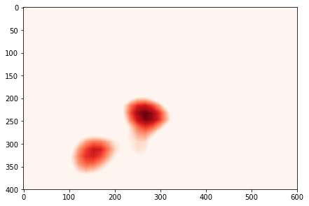 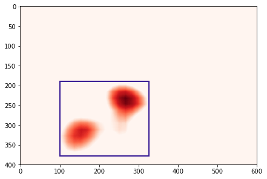 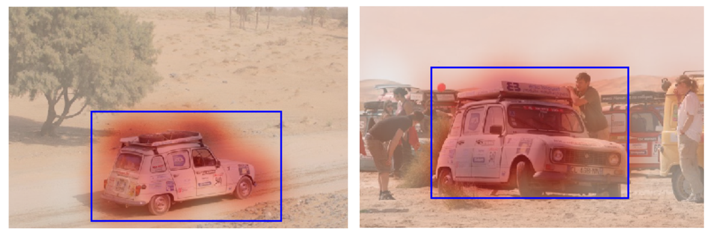
Inferring bounding boxes from heatmaps
With that applied on all our images, we have now a smart way to crop images on the desired target (cars) and train again. Unfortunately, that didn't lead to significant results in our case.
In this part we go over the full process of developing a localization model.
We used RectLabel (ryouchinsa) to manually label 50 images from a given car model. We label three things :
We trained with SSD. Some results are in Figure . Results are very good although we used a small training set. The model was applied on an other car than that of the training one. This is very encouraging.
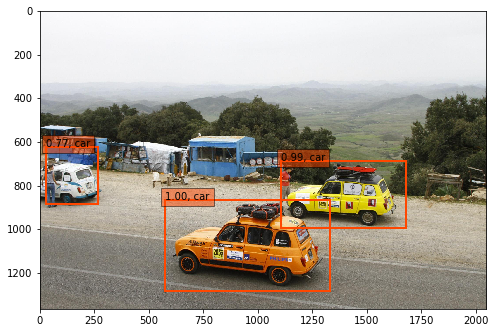 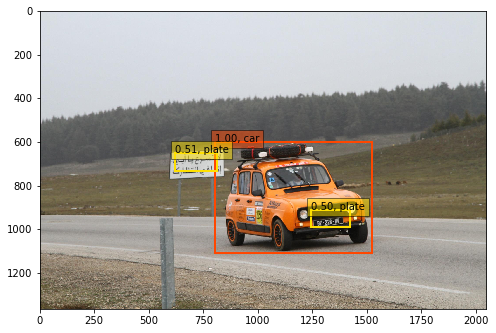 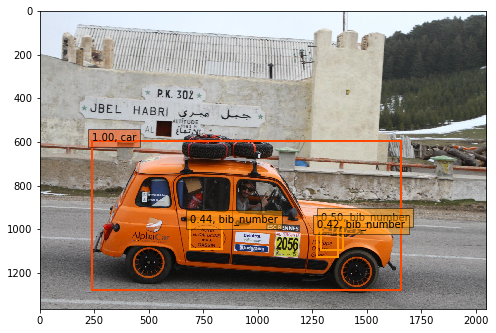 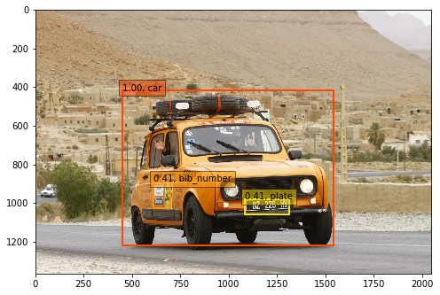 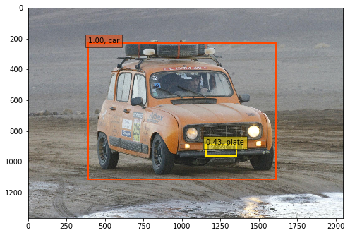
Results of detections by SSD
Thanks to this first project, we have seen how FCNNs can be used both for classification and unsupervised localization. With only very few data, one can also decide to train a proper supervised localization algorithm like SSD with very good results very quickly.
In this section, we want to further elaborate on algorithms and methods to leverage when working with noisy data. That will be specifically useful for Project 2.
In this part, we strongly take advantage of the survey on Classification in the Presence of Label Noise (Frenay & Verleysen 2014) to define precisely what's understood as noise.
B. Frénay writes that there are two types of noise :
It is interesting to highlight that label noise may be more harmful than feature noise (Zhu & Wu 2004), which can intuitively be justified by the fact that there are many features while there's only one label. And label's impact on learning is always very significant, whereas some features are sometimes only weakly correlated with the output, so altering them doesn't cause too much pain.
Just like in B. Frénay's report, we will assume labelling errors to be independent from each other, and not intentional or maliciously added. Label errors happen when humans are involved for labeling, and the reasons of that include :
Approaches to deal with label-noise are (1) using models that are robust to it, (2) trying to filter problematic noisy labels and train on a cleaned dataset, (3) explicitly modeling the noise at training time.
We will use both (1) and (2) in this report, in what we refer to as a Data Quality framework that should at the same time be robust to noise and also highlight the errors.
A popular method for being robust to label errors is bootstrap aggregating (bagging) (Reed et al. 2014), (Xiao et al. n.d.) which is a particular case of ensembling. In this part we will thus recall what is ensembling, and define bagging. We will also illustrate with a random dataset how bagging is the best solution to handle noisy labels.
Ensembling is a method in Machine Learning when \(m \geq 2\) models are learnt out of different training sets, all coming from the initial dataset. These models are then combined by a combiner model. In practice, this combiner model can also just do an aggregation of the predictions from the previous \(m\) models (e.g average). The process is illustrated in Figure .
Ensembling
The outcome of doing ensembling is that every image will have multiple predictions from multiple models. Usually, ensembling may be used with models from different families in order to combine strengths of multiple models into one. But in our case, we will use ensembling with only one model, because our interest is more in taking advantage of bagging to tackle noise rather than combining models.
Bagging is a subcase of Ensembling when the training sets that are created are randomly cut from a given part of their data. This is particularly interesting when working with noisy labels because that enables, in expectancy, to avoid taking noise into account. Figure depicts the process.
Bootstrap aggregating (bagging)
Suppose we think our dataset has around 5 % noise. Suppose further that we decide that 10 % of the data can be randomly removed in the bootstrap step. Then in expectancy, if we do enough models (n_estimators), chances are that the majority of the created datasets will not contain the noise and thus the models will not learn on errors. The combiner will thus manage to give correct predictions.
We wanted to test on random datasets whether we could trust bagging for label robustness. So we generated three datasets, (1) two interleaving half circles, (2) two concentric circles and (3) a linearly separable dataset. They are respectively called Non-linear set 1, Non-linear set 2 and Linearly separable.
We artificially added noise in these sets (30% label permutation) and plotted the results (decision boundaries and accuracies) in Figure

Classifier Comparison
And among the classifiers tested, we see that the Bagging MLP is the one performing the best. It has very coherent decision boundaries and outperforms standard MLP which highlights that bagging gains performance. SVM (and Bagging SVM) fail to capture the non-linearity in the second dataset.
That makes Bagging MLP our best candidate for classification tasks with noisy labels.
Once our model has been trained with bagging, we can assume it did learn mostly on true labels which means we can trust it. If we apply the learnt model on all
We look for images where the two following conditions meet :
Empirically, we tested and found that using the Mean Squared Error (MSE) was a great measure to find these errors. Actually, let \(y\) be the training multi-label and \(\hat{y}\) the predicted labels. Both are of size \(|C|\) where \(C\) is the classes set.
\[MSE(y, \hat{y}) = \frac{1}{|C|} \sum_{c\in C} (y_c - \hat{y}_c)^2\]
We compute the MSEs for all images and sort them by decreasing order. Label errors will be found in the top of that list, where the MSE is the highest.
During the internship at Equancy, we were given the opportunity to work on this very specific Data Quality problems for an external company. That company is a beverage selling company.
It has a Digital Asset Management (DAM) that is used to store any digital file, usually related to the company's activity. On top of that collection is a search engine, and users can retrieve files using a search field. But as highlighted in the introduction, the images are retrieved by looking for string matchs between the query and the image's associated structured data e.g taxonomy categories or keywords (see for a scheme) The company complained that the labeling was too imprecise, not filled enough and even sometimes wrong, eventually making it very hard to exploit their DAM.
Data Asset Management on a big picture
The goal of this project is to find solutions to clean these labels, and also label other images and thus enable the platform to work better.
The DAM consists of over 90'000 assets that can be of any type (image, videos, slides etc). We only focus on image assets (.jpg, .png, .tiff), from now on called images. There are 57'099 images.
When users upload an image into the platform, they are asked to fill two things :
These two fields are the structured data that is used to make queries and retrieve data.
The company managed to derive a pre-defined set of classes in which images should fit. They can be business related classes (such as the operations department - Marketing, Sales). Or classes that a priori rely more on the image composition e.g Bottle, Drink Shot, Logos, Bar Code... And of course, the brand, e.g Absolut or Ballantines.
| Node | Description | Number of children | Visual Meaning ? | Filling Rate |
|---|---|---|---|---|
| Brand and Variant | Brand of that asset (ex: Absolut or Ballantines) | 31 | Yes. It can be fine-grained | 56 % |
| Asset Type | Specific asset that is in the image. e.g Bottle, Drink, Logo, ... | 13 | Yes. | 33 % |
| Market and Language | Geolocation of the team responsible for that asset | 23 | No | 31 % |
| Permissions | That particular asset file permissions | 9 | No | 27 % |
This field is filled with no real strategy and is often a bucket for noise. Some users will copy paste one item's keywords for all the items in a folder, making them not only useless but also sometimes wrong. They're also a copy of the title.
Our analysis highlighted the following facts :
That led us to think we could not learn on the current keywords and will have to use external labels.
Taxonomy The taxonomy is well filled over the dataset, and some of its classes have high visual meanings, making Taxonomy a great candidate for image classification. We can take advantage of the great dataset (over 57'000 images) to learn on it and find, correct mislabeled or unlabeled images. We decided, as a first part, to stick on 2 main categories, Asset Type and Brand and Variant.
Keywords As argued above, keywords do not consist in a valuable training data. We thus decided we would use external datasets or labels to train our models and deploy them later on keywords.
We thus aim for three models:
We decided, for each model, to create a test set using Stratified \(K\)-Fold. Regular \(K\)-Fold is used to generate random separations of the data into \(K\) equally-sized parts e.g. put 90% of the data as train and 10% as test when \(K=10\). In our case, we use Stratified \(K\)-Fold because our classes are highly unbalanced, and that enables to take this into account when separating parts, making sure to have all of the classes represented in each part. We randomly take one test part out and go through it, defining :
In that way, we'll be able to track our improvements. Current performance is according to \(y_c\), and we'll predict \(y_p\) the predicted labels in order to see if we increase the accuracy.
The company taxonomy is not mutually exclusive which justifies the need of designing multi labeling classifiers, and thus adapted performance metrics for them. In that perspective, we decided to use \(f1\) score and sometimes \(f2\).
\[f_{1} = 2 \cdot \frac{\text{precision} \cdot \text{recall}}{\text{precision} + \text{recall}}\]
As seen earlier, the first step when doing transfer learning is to apply forward passes of a pre-trained model on our images in order to get good embeddings. The choice of which pre-trained model is not necessarily obvious although some are more recent and maybe perform better than others on the ImageNet competition. Indeed, depending on which model we choose, and even where in that model we decide to extract the embeddings, we will end up with embeddings of different sizes and carrying different information.
In this project, we decided to consider both VGG-16 and ResNet50 as pre-trained models candidates. That choice is arbitrary, but justified by the desire of
The choice of the pre-trained model will depend on the application (i.e here visualization and modeling) but will be shortly argued every time.
Methods below include first exploratory analysis (visualization of extracted embeddings) and then modeling for the three defined problems. For each case, we'll try traditional machine learning models as long as proper fine-tuning with extra layers on top of the neural networks. At some point we'll also take advantage of additional information thanks to an API (Google Vision API).
In this section, our main objective is to visualize our dataset. We'll thus first discuss which pre-trained model to use under that scope thanks to a PCA analysis, and then apply further dimension reductions for visualization. These steps eventually led us to address other topics including visual similarity and finding duplicates
Our goal was initially to have a way to visualize our datasets under the pre-trained models eyes. We thus needed to reduce the dimensions of our embeddings while keeping most possible information. Already initially, because ResNet50 sizes \((1,2048)\) are smaller than VGG-16 \((514, 7, 7)\), one could expect that this higher density will lead to more information quicker.
So we applied a PCA for both extracted embeddings. The result is just below. As expected, we can see that ResNet50 embeddings will very quickly (i.e with few principal components) grow in the amount of variance explained.

Principal Component Analysis on extracted embeddings
That led us to choose ResNet50 as a feature extractor when it comes to visualizing our data.
Now that we decided to use ResNet50 as a pre-trained model for feature extraction, we can apply a forward pass to all our images using that model (without the last layer). Thus for each image we have as output an embedding (vector) of size (1, 2048). Call \(X\) the matrix with all the embeddings of our images, \(X\) is of shape \((N, 2048)\) where \(N = 57099\) is the total number of images.
In order to visualize this matrix, we use a dimension reduction algorithm called t-Distributed Stochastic Neighbor Embedding (t-SNE, (Maaten & Hinton 2008)). This algorithm is particularly well suited for the visualization of high-dimensional datasets.
Now, it can sometimes be misleading so to avoid deriving quickly too many conclusions from this visualization, we first take care to choose the hyper-parameters of t-SNE.
Indeed, t-SNE has pitfalls : clusters sizes should not be representative of classes size, neither should the distance between clusters represent the real semantic difference between classes (Wattenberg et al. 2016). t-SNE has quite a high sensitivity to both parameters, perplexity and number of iterations, which we explored respectively for values \({10, 20, 30, 40, 50}\) and \({200, 500, 1000, 5000, 1000}\). We settled for perplexity = 20 and iterations = 500.

Choosing the right hyper-parameters for t-SNE
Please find below a figure that represents a random subset of \(n = 5000\) images on this new 2-dimensional space found by t-SNE. We call it a map. What's interesting is that there is already a lot of semantic information on images that lie on this map. For example, there seems to be clusters : group of pictures that are semantically close look spatially close. Indeed, there are "bottle" clusters, "people" clusters...
This is particularly encouraging for our classification tasks as embeddings, which will be our starting-point, already have a lot of information in them.

t-SNE projection of \(n = 5000\) randomly chosen ResNet50 images embeddings
Quiver (Bian 2016) is a library that enables to explore the feature maps of models buit with Keras. We used it to check how VGG-16 feature maps would look like on our data and the same conclusions can be drawn as in Part 2 : the deeper the layer, the more complex the feature maps.
Screenshot of our Quiver webapp
We wanted to go a little further and question some more the relationship between the semantic distance between images and the corresponding distance on the map.
Let's define a little more what we mean by semantic distance. A semantic distance should be understood as a way to measure how the images are close in their true semantic meaning. One must be careful, it is not clear exactly what kind of semantic distance we're expecting. For example two black and white pictures can be semantically close because they're both using the same color range and picture style. But a black and white picture representing a bottle and a RGB picture representing a bottle are also semantically clean.
By corresponding distance on the map, we mean a cosine distance between the two embeddings.
Applications :
Search engine by image. This kind of method could be used to query a data collection with an image instead of a string. As a response, the model would return the \(m\) most similar (according to the cosine distance) images from the dataset.
We show some results in Figure that assess that the embeddings do hold semantic meanings but the distances may highlight different things :
Image input (first column) and the 4 most similar images
Finding duplicates. Although this was out of the project's scope defined by the company but once similarities are computed it would be tempting to use them in order to detect duplicate images and maybe remove them. Indeed, above a given threshold, one may say that two images are so similar that they are the same. It happens that such a threshold seems to work sometimes. Yet we enumerate below two difficulties we thought of that would justify that this is not such a straightforward problem.
In the previous Figure , the bar codes on the fifth line have very high similarity measures (above .99) but the bar codes are not the same.
Models like VGG-16 or ResNet50 apply pre processing steps to images like resizing e.g. 224*224 for VGG-16. So two images that were initially in a collection with different sizes, resolutions, may end up with the exact same embeddings while the images are not duplicates and the company may just want to keep the images with a few different resolutions.
We work on 13 classes : Bottle, Can, Case, Drink Shots, Font, Heritage, Ingredients, Labels, Logos, Medals and Awards, Packaging Artwork, People, Tasting Notes, UPC - Bar Codes, VAP - Gift Packs.
Distribution. We display below in Figure the labels distribution of Asset Type category.
Co-occurence matrix and histogram of labels in Asset Type category
From that plot, we can see that the classes are very unbalanced and that there are rarely more than one label on an image (besides Bottle & Case, Bottle & Drink Shots and Bottle & People)
We describe below the steps we considered when working on Asset Type.
Feature Extractor. The best feature extractor was VGG-16 in our case. See Figure
Performance differences between VGG-16 and ResNet. VGG-16 performs slightly better.
Models considered. We selected XGBoost, RF, ML-kNN, SVM and MLP as candidates, as well as a stacking model (composed of all of them) and bagging versions for SVM and MLP.
Please note that MLP is a model which input is the last convolutional layer of VGG-16 with size (7, 7, 512). It is appended with the following NN (Keras verbose)
MaxPooling2D(input_shape=X_shape,name = 'top_maxpooling'))
BatchNormalization()
Dropout(.5)
Flatten(name='top_flatten')
Dense(512, activation='relu', name='top_relu_1')
BatchNormalization()
Dropout(.5)
Dense(512, activation='relu', name='top_relu_2')
BatchNormalization()
Dropout(.5)
Dense(n_classes, activation='sigmoid')And the BaggingMLP is a bagging version of that MLP with 5 estimators and a maximum random sample size of 75 %.
Performance and PCA Analysis. We wanted to study what was a good compromise between number of components kept after PCA, computation time and performance (f1-score). Figure represents exactly that, and enables to draw interesting conclusions.

Analysis of performance and computation time depending on the principal components kept.
Model Selection. We thus selected Bagging MLP as our model with embeddings of size 100.
One final parameter we wanted to study is the probability threshold i.e. from what probability value we should decide to output a given class. From Figure we decided to settle for a threshold of 0.4.

Probability threshold influence on BaggingMLP's performance for Asset Type.
We managed to find 2'500 images concerned by label errors (13 % of the images). A few results are in Figure .
Examples of errors found in the labels. Red : previous label, Blue : predicted label
Our model was also deployed on images that had no labels (38'000 images concerned). It classified 35'000 of them. Some examples in Figure
Model deployed on unlabeled images for Asset Type.
Finally, the filling rate for Asset Type taxonomy went from 33% (19'000) to
94% (54'000) . And 2'500 errors were detected.
Motivation
Brand and Variant was a more difficult category because the differences are more subtle between brands than between objects. One explanation is that our architecture was not adapted : VGG-16 was designed to classify objects, and fine-grained recognition deserves taylor-made architectures.
The model associated with Keywords was also challenging because it was expected to be quite generic and give more general descriptors of images.
We decided to leverage an external Computer Vision API (Google), initially as a way to see its performances and guarantee we could have results, but also as a way to improve our training sets by giving supplementary labels on which we could train.
Three methods were used :
TEXT_DETECTION : performs Optical Character Recognition (OCR) and language identificationLABEL_DETECTION : detects broad sets of categories within an image, which range from modes of transportation to animalsLOGO_DETECTION : detects popular product logos in an imageResults
The API is really strong in finding labels to describe an image. It almost always returns something, and visual checks confirmed that these labels were good. Moreover, labels are good descriptors for either objects, scenes or colors classifications.
There are many results for text detection (nearly 50% of cases) and although there are errors in the OCR, words remain pretty close from the original texts.
Logos were rarely found (15 % of cases) and were sometimes wrong. Most often, when logos are found, the text detection was already close enough and could have been sufficient to identify the brand.
| Method | Number of images filled | Percentage |
|---|---|---|
| LABEL_DETECTION | 56'830 | 99.5 % |
| LOGO_DETECTION | 8'622 | 15.1 % |
| TEXT_DETECTION | 28'166 | 49.3 % |
Some examples are shown in Figure :
Results of Google Vision API for some images.
We focus on 30 classes : Aberlour, Absolut, Altos, Ararat, Avion, Ballantines, Becherovka, Beefeater, Chivas Brothers, Chivas Regal, G.H.MUMM, Havana Club, Jacob's Creek, Jameson, Kahlua, Kenwood, Lillet, Malibu, Martell, Midleton, Oddka, Olmeca, Pernod, Perrier-Jouët, Plymouth, Ricard, Royal Salute, Seagram's, The Glenlivet, Wyborowa
Take advantage of Google Vision API logos and text
As highlighted in the results of Google Vision API, the TEXT_DETECTION worked pretty often (nearly 50% of cases) but sometimes OCR had some errors (misspellings occured).
We looked for 1-gram, 2-grams and 3-grams that have a sufficiently low distance with a brand's name. By distance, we mean Levenshtein distance. For example for Perrier-Jouët, the gain is very high if we tolerate distances <= 3 :
Some more examples are in Figure
Examples of brand retrievals using Levenshtein distances.
The distance threshold is inferred from the brand's string length according to the following function :
def valid_threshold(string, score):
"""
if a string has a levenshtein distance
below its length divided by 4 with a brand
then we want to keep it
"""
threshold = round(len(brand)/4)
return score <= thresholdThat function showed good results and we manually removed cases when it didn't work. Especially, short strings were too sensitive because tolerating distances with them would yield many false positives (usual words from english language for example). We also applied this process to the logos found by the API in order to match them to our initial labels set regardless of small variations.
Below is a plot that describes the gain in number of tags that both logo and text tolerance enabled us to have.
Gain of brand retrieval on OCR output with misspellings tolerance.
We can observe that these tolerances on misspellings enabled to find many more brands in the images than if we only looked for perfect matchs. This is particularly true for complex spellings like "Perrier-Jouët" which gain is very significant.
Finally, thanks to this, we went from 32'700 labels for brands to 36'200 and highlighted 700 errors. This enabled us to somehow ensure that the DAM was now cleaned for Brand and Variant. But just like Asset Type, we wanted to provide a model that could help in the future without needing to go through Google Vision API.
Bagging MLP Multi-label
It was not easy to find the best training set for learning brands because some images were initially tagged with brands but they had no visual meaning e.g. an employee for brand \(X\) could be tagged with that brand \(X\) but there is nothing that our vision models can learn on it.
Using brands training set straight away thus led to poor results. We tried to filter images such that they had a better visual signature by keeping those that also fell into Asset Type categories within the ones we selected in the first place. We trained with batch_size=64, epochs=5.
Results were better, but the model is rarely confident enough to find errors (and we also assumed that there would be very few errors).
We still provide results in Figure
Some results for Brand and Variant BaggingMLP model
Current keywords were very noisy making it impossible to train on them. We thus decided to use Google Vision API LABEL_DETECTION method's output as a ground truth and train on it.
Among the 57'099 images that went through the API, the LABEL_DETECTION method gave results for 56'830 (99.5 %) of them. That represented 3'333 unique labels.
Assuming we want to use these labels as a ground truth to train a model, we thought 3'333 labels (which meant training for 3'333 classes) was too big.
With 57k training images, having 3'333 classes meant an average of 17 images per class which is too low. Especially because considering averages is wrong : the distribution of labels is much closer to a negative exponential, and it has a very long tail i.e. most words have a frequency even below 10 (see Figure )

Distribution of labels frequencies.
We thus thought of three different ways to filter and decide which labels to train on :
The one we used to deliver the project was (1) because it was the quickest approach and it didn't need heavy feedbacks from the company. But we investigated (2) in Supplementary Applications part, and suggested (3) to the company for further iterations of the project.
Frequency threshold study.
We wanted to find what threshold (minimum frequency for a label) best suited our study, taking into consideration the impact on the number of images that were concerned by the remaining labels, and the number of images per labels.

Influence of the label minimum frequency filter on the number of labels and images.
We settled for 107 and 500 labels. These labels may be found in the Appendix. Once again, we don't claim here that this choice is wise in regard to the final application. Indeed, most frequent tags may not always be discriminant when a user makes a query. Yet we believe that this ensures having enough training data for all classes (at least 100 examples per class).
Model. For both models (107 labels and 500 labels) we used Bagging MLPs and they worked very well. We respectively chose 512 (for 107 labels) and 2'000 (for 500 labels) neurons on both hidden layers. We used 5 estimators but a maximum random sample size of 90 %, estimating that there was less noise in this set. Training was done with 5 epochs and 64 batch_size.
We studied once more the performances of various models when adding noise on a clean dataset like the 500 labels dataset. See Figure .
Models performances when adding noise to 500 labels data
Bagging MLP remains the best model regardless of the amount of noise (label flips) we insert in the original data. It has a small decreasing rhythm, unlike SVM for example.
We also make sure to evaluate what is the best probability threshold, and settle on 0.4, see Figure .

Tuning the probability threshold for 500 labels model
Results. Some examples of outputs for the 500 labels model are shown below in Figure
Examples of the 500 labels model. It can handle many different situations.
One idea we had was to suggest the company a new taxonomy that truly matches their data. For example, starting from the embeddings of the images, we could apply clustering methods like k-means, evaluate them using silhouette scores and if they reach a sufficient score the clusters could be named as new categories. We tried this for mutually exclusive categories (single-label classification) but doing this for multi-labeling was less clear.
As inspired by (Ghazouani 2016), we thought we could prune the number of labels given from the Google API results by applying topic extractions on them. By analogy with Natural Language Processing where topic extraction is famous, we represent each image just like documents as unordered lists of words (here labels). And we try to find \(k\) topics (\(k\) is an input) that best describe the labels.
That enables to find super labels automatically, i.e. labels categories. We show below some of the topics we found when applying LDA with \(k=30\) along with their 20 most probable words (labels) and manually give them names.
Topic 0 (art) : monochrome black white photography line structure pattern text photograph angle history design architecture font russian building stock factory sky area
Topic 1 (lifestyle) : fun event socialite girl fashion party ceremony relations smile club friendship public nightclub interaction purple costume drink restaurant night recreation
Topic 2 (face) : hair smile facial hairstyle chin long cheek forehead care vision glasses human eyebrow brown eyewear beauty girl color person professional
Topic 3 (events): public relations communication speaking professional technology conversation presentation institution conference speech energy academic business lecture meeting seminar entrepreneur device orator
Topic 4 (business): executive business businessperson professional official officer chin worker collar forehead suit person profession entrepreneur white gentleman elder spokesperson wear formal
Instead of choosing the labels because of their frequencies, we could have used topics instead of labels are classes. This could be interesting.
Now that we provided the company with a generic API that may give multi label predictions on images, we thought it would be interesting to apply these models to data streams from social networks e.g. Twitter / Instagram in order to get an idea of what brands transmit in their images in term of semantic. A typical visualization for this is Senkey diagrams, which we did (using only the information on the DAM images).
What brands transmit in their images
In this part, we quickly present approaches we also considered but that did not give convincing results.
Like in Project 1, we also tried using FCNNs but the performances were worse than using the Bagging MLP.
Before deciding that we would not train on keywords for sure, we tried to use them as additional features for our Bagging MLP when training for Asset Type. Indeed, along with the VGG-16 embedding, we used TF-IDF features from the Keywords field, but that didn't work.
Initially, we tried to train the Bagging MLP on the ImageNet dataset, only considering 100 classes that we manually selected. The results were very bad, and we think one reason is that ImageNet initial dataset only has one class per image, while we were training for multi labels. So maybe sometimes a few classes were present but the image wasn't labeled for all of them which is confusing for the algorithm.
We worked on Jupyter Notebooks, using Keras (Chollet & others 2015) framework for Deep Learning. Computations were done on an AWS ec2 instance with GPU.
Thanks to this project, the DAM of the company was cleaned, enriched, and models were saved for further use.
Asset Type
Brand and variant
Keywords
Not only our models enabled to clean and enrich the current DAM, but they will be use-able in the future when new images will be uploaded. We also highlighted potential future applications.
In this thesis, we studied methods to add structure in images and image collections using Deep Learning. The roots of these methods are in Neural Networks, especially Convolutional Neural Networks. We first provided keys for understanding why these models perform well, and then went over a few applications to confirm their strengths.
Indeed, in Project 1, we have seen how Fully Convolutional Neural Networks (FCNNs) were able to classify a collection of race car images. A particular strength of the FCNN we designed was to provide unsupervised localization for free, using activations of the last convolutional layer. Yet, we also went through a full methodology for training models for supervised localization using manual annotations and SSD algorithm.
Project 2 was an opportunity to work on a real company's internal gallery. The company wanted to find ways to improve their experience when browsing their Data Asset Management platform, and classification algorithms were one convincing solution. We particularly showed that Bagging Multi Layer Perceptrons on top of pre-trained models were performing well in multi label classification tasks. Some of their images had wrong labels, and our models were able not only to be robust to that noise, but also to highlight these very same noisy images, while suggesting new correct labels.
Along the way, we highlighted other applications like high-dimensionality data visualization, image search engines, duplicates finding or image clustering. We hope having provided keys, ideas and solutions to keep in mind when cleaning or enriching image collections.
Complementary works on Computer Vision are numerous : image segmentation, image generation, image to caption models... Deep Learning applied to Computer Vision is indeed a very active research field. While we highlighted that image traffics were rising a lot every year, we mention now that videos are expected to generate more than three-fourths (78 %) of mobile data traffic by 2021 (Cisco 2017). Videos are by themselves particular collections of images, and one can expect that just like tailor-made algorithms for images became very usual, the same will soon apply for videos.
We show below the 107 labels kept when working with keywords. They appear at least 800 times each.
['academic conference', 'advertising', 'alcohol',
'alcoholic beverage', 'area', 'audience', 'bar', 'beer',
'black and white', 'blue', 'bottle', 'brand', 'building',
'business executive', 'businessperson', 'ceremony', 'champagne',
'chin', 'city', 'cocktail', 'cocktail garnish', 'communication',
'computer wallpaper', 'convention', 'conversation', 'crowd',
'cuisine', 'darkness', 'design', 'dessert wine', 'dish',
'distilled beverage', 'drink', 'drinkware', 'entertainment',
'entrepreneur', 'event', 'executive officer', 'fashion', 'flavor',
'font', 'food', 'forehead', 'fun', 'furniture', 'gentleman',
'gin and tonic', 'girl', 'glass', 'glass bottle', 'graphics',
'grass', 'harvey wallbanger', 'institution', 'interior design',
'juice', 'label', 'light', 'lighting', 'line', 'liqueur', 'liquid',
'logo', 'monochrome', 'monochrome photography', 'night',
'non alcoholic beverage', 'official', 'party', 'performance',
'performance art', 'performing arts', 'person', 'plant', 'product',
'product design', 'profession', 'professional', 'public relations',
'public speaking', 'purple', 'recreation', 'restaurant', 'sky',
'smile', 'socialite', 'speech', 'stage', 'stemware',
'still life photography', 'suit', 'table', 'tableware',
'technology', 'text', 'tourism', 'tree', 'vehicle', 'vodka',
'water', 'whisky', 'white collar worker', 'wine', 'wine bottle',
'wine glass', 'wood', 'yellow']We show below the 500 labels kept when working with keywords.
['absolut vodka', 'academic conference', 'advertising', 'agave',
'agave azul', 'agriculture', 'alcohol', 'alcoholic beverage',
'angle', 'animal source foods', 'appetizer', 'arch', 'architecture',
'area', 'arecales', 'arm', 'art', 'art exhibition', 'atmosphere',
'audience', 'audio', 'auditorium', 'automotive design',
'automotive exterior', 'automotive tire', 'award',
'bacardi cocktail', 'banner', 'banquet', 'bar', 'barrel',
'bartender', 'barware', 'batida', 'bay breeze', 'beard', 'beauty',
'beer', 'beer bottle', 'beer cocktail', 'beer glass', 'black',
'black and white', 'black hair', 'black russian', 'blazer', 'blond',
'blood and sand', 'blue', 'boat', 'boating', 'bottle', 'box',
'branch', 'brand', 'brandy', 'breakfast', 'brown hair', 'brunch',
'building', 'business', 'business administration',
'business development', 'business executive', 'businessperson',
'caipirinha', 'calligraphy', 'car', 'ceiling', 'ceremony', 'chair',
'champagne', 'champagne stemware', 'championship', 'cheek', 'chin',
'circle', 'citric acid', 'city', 'cityscape', 'classic cocktail',
'clip art', 'close up', 'clothing', 'cloud', 'club', 'coast',
'coastal and oceanic landforms', 'cobalt blue', 'cocktail',
'cocktail garnish', 'cognac', 'collaboration', 'commodity',
'communication', 'community', 'competition', 'competition event',
'computer wallpaper', 'concert', 'convention', 'convention center',
'conversation', 'cook', 'cookware and bakeware', 'cosmopolitan',
'costume', 'cottage', 'crop', 'crowd', 'cuba libre', 'cuisine',
'cup', 'daiquiri', 'dairy product', 'dance', 'dancer',
'dark n stormy', 'darkness', 'daylighting', 'daytime', 'design',
'dessert', 'dessert wine', 'dinner', 'disco', 'dish',
'display advertising', 'display device', 'distilled beverage',
'dock', 'dress', 'drink', 'drinking', 'drinkware', 'eating',
'ecosystem', 'elder', 'electric blue', 'electronic device',
'electronics', 'energy', 'entertainment', 'entrepreneur', 'estate',
'evening', 'event', 'executive officer', 'exhibition', 'eyebrow',
'eyewear', 'facade', 'face', 'facial expression', 'facial hair',
'factory', 'farm', 'fashion', 'fashion accessory', 'fashion design',
'fashion model', 'fashion show', 'festival', 'field', 'finger',
'finger food', 'flavor', 'floor', 'flooring', 'flora',
'floral design', 'floristry', 'flower', 'flower arranging',
'flowering plant', 'font', 'food', 'forehead', 'formal wear',
'friendship', 'frozen dessert', 'fruit', 'fun', 'function hall',
'furniture', 'fuzzy navel', 'fete', 'games', 'garden', 'gentleman',
'gimlet', 'gin and tonic', 'girl', 'glass', 'glass bottle',
'glasses', 'grape', 'grapevine family', 'graphic design',
'graphics', 'grass', 'grass family', 'grassland', 'green', 'grog',
'hair', 'hairstyle', 'hand', 'happiness', 'harvey wallbanger',
'headgear', 'health and beauty', 'highball', 'highball glass',
'highland', 'hill', 'hill station', 'historic site', 'history',
'home', 'horizon', 'house', 'human', 'human behavior',
'human hair color', 'illustration', 'indoor games and sports',
'industry', 'infrastructure', 'ingredient', 'institution',
'interaction', 'interior design', 'irish cream', 'jeans', 'job',
'joint', 'juice', 'label', 'lady', 'land lot', 'landmark',
'landscape', 'leaf', 'lecture', 'leg', 'leisure', 'lemon juice',
'lemon lime', 'lemonade', 'light', 'light fixture', 'lighting',
'lime', 'lime juice', 'limeade', 'line', 'liqueur',
'liqueur coffee', 'liquid', 'liquor store', 'local food', 'logo',
'long hair', 'long island iced tea', 'lunch', 'machine',
'macro photography', 'magenta', 'mai tai', 'male', 'man',
'management', 'margarita', 'marina', 'martini', 'martini glass',
'mason jar', 'material', 'meal', 'meeting', 'metal', 'metropolis',
'metropolitan area', 'microphone', 'midnight', 'mint julep',
'mode of transport', 'modern art', 'mojito', 'monochrome',
'monochrome photography', 'morning', 'motivational speaker',
'motor vehicle', 'mountain', 'multimedia', 'muscle', 'music',
'music artist', 'music venue', 'musical instrument',
'musical instrument accessory', 'musical theatre', 'musician',
'nail', 'nan', 'nature', 'nature reserve', 'neck', 'necktie',
'negroni', 'neighbourhood', 'neon', 'news conference', 'night',
'nightclub', 'non alcoholic beverage', 'nose', 'ocean', 'official',
'old fashioned', 'old fashioned glass', 'orange', 'orange drink',
'orator', 'organism', 'outdoor structure', 'outerwear',
'packaging and labeling', 'painting', 'palm tree', 'paper', 'party',
'pattern', 'pedestrian', 'percussion', 'performance',
'performance art', 'performing arts', 'perfume', 'person', 'petal',
'phenomenon', 'photograph', 'photography', 'pink', 'pint glass',
'pint us', 'plain', 'plant', 'plant community', 'plantation',
'portrait', 'poster', 'prairie', 'presentation', 'produce',
'product', 'product design', 'profession', 'professional',
'promontory', 'property', 'pub', 'public event', 'public relations',
'public space', 'public speaking', 'punch', 'purple', 'real estate',
'recipe', 'recreation', 'rectangle', 'red', 'red wine',
'reflection', 'residential area', 'restaurant', 'river', 'road',
'rock', 'rock concert', 'roof', 'room', 'rural area',
'scotch whisky', 'screenshot', 'sea', 'sea breeze', 'seminar',
'senior citizen', 'service', 'session musician', 'shoe', 'shore',
'shoulder', 'shrubland', 'sign', 'signage', 'singer',
'singer songwriter', 'singing', 'sitting', 'sky', 'sleeve', 'smile',
'snapshot', 'social group', 'socialite', 'soil', 'space',
'sparkling wine', 'speech', 'spokesperson', 'sport venue', 'sports',
'spring', 'staff', 'stage', 'standing', 'stemware', 'still life',
'still life photography', 'stock photography', 'street',
'string instrument', 'structure', 'student', 'suit', 'summer',
'sunglasses', 'sunlight', 'superfood', 'supper', 'symbol',
'symmetry', 't shirt', 'table', 'tableware', 'taste', 'team',
'team sport', 'technology', 'television program',
'tennessee whiskey', 'text', 'textile', 'texture', 'the rickey',
'theatre', 'tourism', 'tourist attraction', 'town', 'tradition',
'training', 'transport', 'tree', 'tumbler', 'tuxedo', 'uniform',
'urban area', 'vacation', 'vegetable', 'vegetarian food',
'vegetation', 'vehicle', 'vineyard', 'violet', 'vision care',
'vitis', 'vodka', 'vodka and tonic', 'walking', 'wall', 'water',
'water bottle', 'water resources', 'water transportation',
'watercraft', 'waterway', 'whisky', 'white', 'white collar worker',
'white wine', 'wilderness', 'window', 'wine', 'wine bottle',
'wine cocktail', 'wine glass', 'winery', 'winter', 'woo woo',
'wood', 'wood stain', 'woody plant', 'world', 'yellow', 'youth']Barron, A.R., 1993. Universal approximation bounds for superpositions of a sigmoidal function. IEEE Transactions on Information Theory, 39(3), pp.930–945.
Bian, J., 2016. Quiver.
Breiman, L. & Schapire, E., 2001. Random forests. In Machine learning. pp. 5–32.
BrightPlanet, 2012. Structured vs. unstructured data.
Chen, T. & Guestrin, C., 2016. XGBoost: A scalable tree boosting system. CoRR, abs/1603.02754. Available at: http://arxiv.org/abs/1603.02754.
Chollet, F. & others, 2015. Keras.
Cisco, 2017. Cisco visual networking index: Global mobile data traffic forecast update, 2016–2021 white paper - cisco.
Cortes, C. & Vapnik, V., 1995. Support-vector networks. In Machine learning. pp. 273–297.
Duchi, J., Hazan, E. & Singer, Y., 2010. Adaptive subgradient methods for online learning and stochastic optimization, EECS Department, University of California, Berkeley. Available at: http://www2.eecs.berkeley.edu/Pubs/TechRpts/2010/EECS-2010-24.html.
Dumoulin, V. & Visin, F., 2016. A guide to convolution arithmetic for deep learning.
Frenay, B. & Verleysen, M., 2014. Classification in the presence of label noise: A survey. IEEE Transactions on Neural Networks and Learning Systems, 25(5), pp.845–869.
Ghazouani, Y., 2016. How to use deep learning and transfer learning to tag images.
Google, Google cloud vision api.
Huang, J. et al., 2016. Speed/accuracy trade-offs for modern convolutional object detectors. CoRR, abs/1611.10012. Available at: http://arxiv.org/abs/1611.10012.
Ioffe, S. & Szegedy, C., 2015. Batch normalization: Accelerating deep network training by reducing internal covariate shift. CoRR, abs/1502.03167. Available at: http://arxiv.org/abs/1502.03167.
Karpathy, A., CS231n convolutional neural networks for visual recognition, intro.
Karpathy, A., 2014. What i learned from competing against a convnet on imagenet.
Kingma, D.P. & Ba, J., 2014. Adam: A method for stochastic optimization. CoRR, abs/1412.6980. Available at: http://arxiv.org/abs/1412.6980.
Klambauer, G. et al., 2017. Self-normalizing neural networks. CoRR, abs/1706.02515. Available at: http://arxiv.org/abs/1706.02515.
Krizhevsky, A., Sutskever, I. & Hinton, G.E., 2012. Imagenet classification with deep convolutional neural networks. In Advances in neural information processing systems. pp. 1097–1105.
LeCun, Y. et al., 1998. Gradient-based learning applied to document recognition. Proceedings of the IEEE, 86(11), pp.2278–2324.
LeCun, Yann & M. Ranzato, 2013. Deep learning tutorial. Tutorials in International Conference on Machine Learning (ICML’13)., pp.1–29.
Liu, W. et al., 2016. SSD: Single shot multibox detector. In ECCV.
Maaten, L. van der & Hinton, G.E., 2008. Visualizing high-dimensional data using t-sne. Journal of Machine Learning Research, 9, pp.2579–2605.
Mikolov, T. et al., 2013. Distributed representations of words and phrases and their compositionality. CoRR, abs/1310.4546. Available at: http://arxiv.org/abs/1310.4546.
Nielsen, M.A., 2015. Neural networks and deep learning.
Ollion, X., 2017. Fully convolutional neural networks.
Reed, S. et al., 2014. Training Deep Neural Networks on Noisy Labels with Bootstrapping., pp.1–11. Available at: http://arxiv.org/abs/1412.6596.
Ren, S. et al., 2015. Faster R-CNN: towards real-time object detection with region proposal networks. CoRR, abs/1506.01497. Available at: http://arxiv.org/abs/1506.01497.
Rosenblatt, F., 1957. The perceptron, a perceiving and recognizing automaton project para, Cornell Aeronautical Laboratory. Available at: https://books.google.ch/books?id=P\_XGPgAACAAJ.
Russakovsky, O. et al., 2014. ImageNet large scale visual recognition challenge. CoRR, abs/1409.0575. Available at: http://arxiv.org/abs/1409.0575.
ryouchinsa, RectLabel - labeling images for bounding box object detection.
Salakhutdinov, R. & Hinton, G.E., 2007. Learning a nonlinear embedding by preserving class neighbourhood structure. In M. Meila & X. Shen, eds. Proceedings of the eleventh international conference on artificial intelligence and statistics (aistats-07). Journal of Machine Learning Research - Proceedings Track, pp. 412–419. Available at: http://jmlr.csail.mit.edu/proceedings/papers/v2/salakhutdinov07a/salakhutdinov07a.pdf.
Srivastava, N. et al., 2014. Dropout: A simple way to prevent neural networks from overfitting. Journal of Machine Learning Research, 15, pp.1929–1958. Available at: http://jmlr.org/papers/v15/srivastava14a.html.
Sun, C. et al., 2017. Revisiting unreasonable effectiveness of data in deep learning era.
Szymański, P. & Kajdanowicz, T., 2017. A scikit-based Python environment for performing multi-label classification. ArXiv e-prints.
Tieleman, T. & Hinton, G., 2012. Lecture 6.5-rmsprop: Divide the gradient by a running average of its recent magnitude. COURSERA: Neural networks for machine learning, 4(2), pp.26–31.
Torralba, A., Russell, B.C. & Yuen, J., 2010. LabelMe: Online image annotation and applications. Proceedings of the IEEE, 98(8), pp.1467–1484.
Urbanke, R., 2016. Machine learning cs-433 - 2016 | mlo.
Wattenberg, M., Viégas, F. & Johnson, I., 2016. How to use t-sne effectively. Distill. Available at: http://distill.pub/2016/misread-tsne.
Xiao, J. et al., 2010. SUN database: Large-scale scene recognition from abbey to zoo. In CVPR. IEEE Computer Society, pp. 3485–3492. Available at: http://dblp.uni-trier.de/db/conf/cvpr/cvpr2010.html#XiaoHEOT10.
Xiao, T. et al., Learning from Massive Noisy Labeled Data for Image Classification.
Zeiler, M.D., 2012. ADADELTA: an adaptive learning rate method. CoRR, abs/1212.5701. Available at: http://arxiv.org/abs/1212.5701.
Zeiler, M.D. & Fergus, R., 2014. Visualizing and Understanding Convolutional Networks arXiv:1311.2901v3 [cs.CV] 28 Nov 2013. Computer Vision–ECCV 2014, 8689, pp.818–833. Available at: http://arxiv.org/abs/1311.2901.
Zeiler, M.D. et al., 2013. On rectified linear units for speech processing. In 2013 ieee international conference on acoustics, speech and signal processing. pp. 3517–3521.
Zhu, X. & Wu, X., 2004. Class noise vs. attribute noise: A quantitative study., 22, pp.177–210.